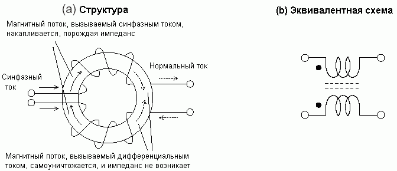
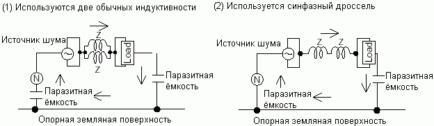
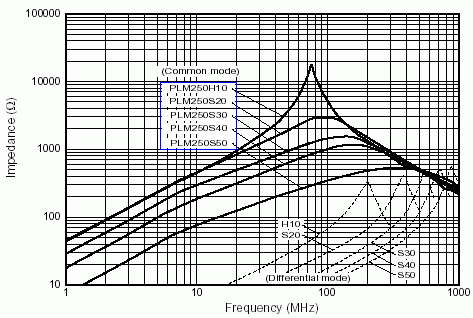

Перевод: ©CОПЫРИГХТ: Дмитрий Иоффе, Советский Союз, www.dsioffe.narod.ru
Шумы делятся на два типа по способу прохождения.
Первый тип - это дифференциальные шумы, которые распространяются по линии сигнала (питания) и земли в разных направлениях. Для их подавления устанавливаются фильтры в линии сигнала или питания.
Второй тип - это синфазные (common mode) шумы, которые распространяются по всем линиям в одном направлении. Например, в сети переменного тока шумы распространяются по обеим линиям в одном направлении. В сигнальном кабеле шумы также распространяются по всем линиям кабеля в одном направлении.
Поэтому для подавления шумов этого типа фильтры устанавливаются во всех линиях, по которым распространяются шумы.
В примерах, показанных выше, применяются два следующих метода подавления шумов:
Синфазные дроссели для дифференциального тока (сигнала) работают как простой проводник, а для синфазного тока (шума) - как индуктивность.
Влияние на синфазный шум: так как магнитный поток, вызываемый синфазным током, накапливается, появляется значительный импеданс.
Синфазные дроссели хорошо подходят для подавления синфазных шумов, так как легко получить катушку с большим импедансом.
Синфазные дроссели используются для подавления синфазных шумов. Их получают, наматывая сигнальные или питающие провода на ферритовый сердечник.
Так как магнитный поток течёт внутри ферритового сердечника, синфазный дроссель работает как индуктивность для синфазного тока. Таким образом, применение синфазного дросселя обеспечивает большой импеданс для синфазного тока и бОльшую эффективность подавления синфазных шумов по сравнению с обычными индуктивностями.
Влияние на дифференциальный ток: так как магнитные потоки, вызываемые дифференциальными токами, взаимоуничтожаются, импеданс не возникает.
Примеры характеристик импеданса синфазных дросселей для постоянного тока:
Так как магнитные потоки взаимоуничтожаются внутри ферритового сердечника, для дифференциального тока импеданс не возникает. Проблема насыщения магнитного материала незначительна. Синфазные дроссели подходят для подавления синфазных шумов в линиях с большими токами, например, в сетях питания переменного и постоянного тока. Так как они не влияют на форму сигнала, они также пригодны для подавления синфазных шумов там, где нежелательны искажения сигнала, например, в видеолиниях.
На приведённом выше графике показаны примеры характеристик импеданса синфазных дросселей для постоянного тока. Существующие характеристики также содержат дифференциальный импеданс, и он должен учитываться при использовании синфазных дросселей в схемах с большим размахом сигнала.
На главную страницу